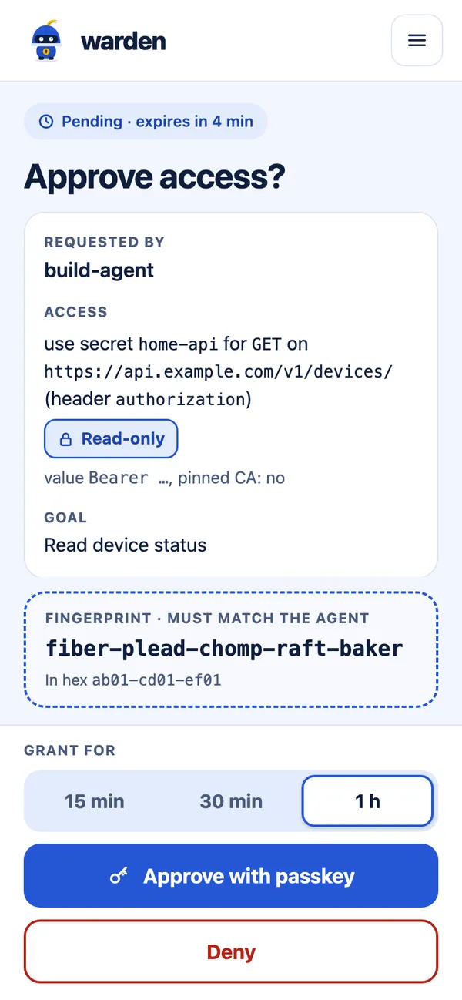
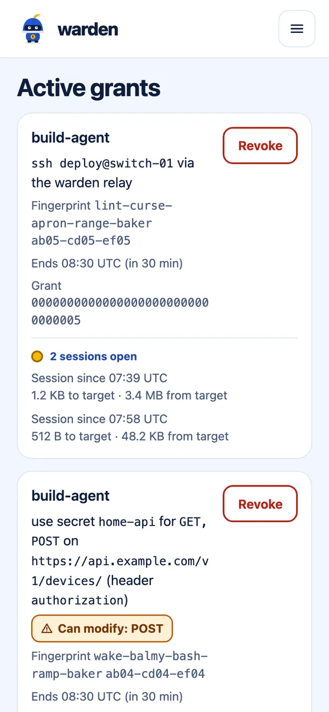
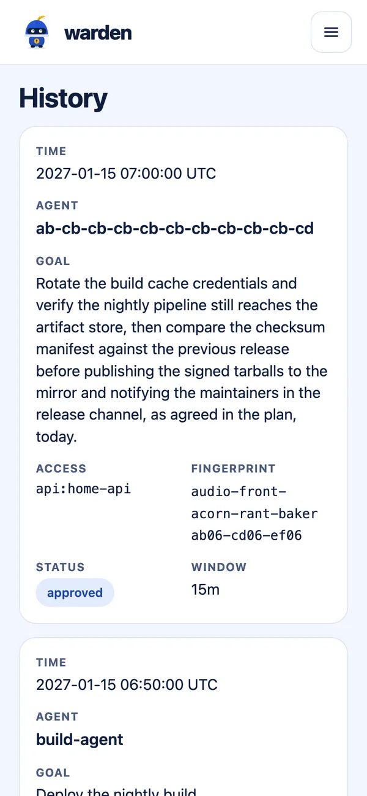

Early, before 1.0, with no independent security review
Your agent asks.You approve from your phone.The grant expires.
warden is a self-hosted approval broker for AI agents and scripts. An agent asks for SSH or API access and says why. You approve with a passkey for a time window, the agent gets that access and no reusable key for your systems, and what warden does goes in an audit log. When the window ends, API calls are refused and relay sessions close. In SSH certificate mode new logins stop, but a session already open keeps running.
Agents need access. The usual ways to give it fall short.
An agent that diagnoses or operates your own infrastructure has to reach servers, appliances and the APIs running on them. You leave it working for you and get on with something else, often away from the computer it runs on.
A reusable key on the agent's machine
An SSH key, API token or vault service account token works unattended. It also works for anything, at any time, and the agent, or whatever compromises it, holds it for good. warden exists because that is not an acceptable price for never getting stuck: no SSH key, API token or target password on the agent's machine, and no access that is always on. The agent keeps only its own identity key. That key can ask for access and use active grants, but cannot approve anything, and it cannot be copied only if it is held in hardware.
Approving each use at the computer
A password manager can keep the secret from the agent, but each use is approved on the computer, with the desktop app unlocked. Away from that computer, or with the agent on another machine, the request waits for a fingerprint you cannot give from there. Nothing is more frustrating than coming back to your Mac to find the agent has sat on a 1Password prompt the whole time.
warden moves the approval to your phone
The agent asks for one piece of access, with a stated goal and a short window. You approve or deny it from wherever you are. Secrets stay in your vault and on your warden server (on the server alone with the weaker local backend). It still needs a person: if nobody answers, the request expires after 10 minutes and the agent has to ask again, and a grant lasts at most 4 hours. If you are asleep, the agent waits.
How it works
From request to audit log
One request, followed through. The screenshots are warden's real pages, rendered from its test fixtures, so the names and times are placeholders.
The agent asks
It names the access, the window and the goal, then waits. warden checks the request against your policy, in a 1Password vault in the recommended setup. Without --methods, an API request is read-only.
On the agent's machine
warden request api home-api \
--methods GET --path /v1/devices/ \
--for 1h --goal "Read device status"
request <id>, fingerprint ab01-cd01-ef01 — waiting for approval…
Your phone notifies you
Through Home Assistant or ntfy. A notification carries the agent, the access, any session label the agent stated, up to 200 characters of the goal and a link. It holds no secret and cannot approve anything. Miss it, and the request waits on the Pending page of the approval UI until it expires.
The text warden sends
warden: build-agent wants api home-api (read-only)
Read device status
https://warden.example.ts.net/approve/…
You approve with a passkey
The page shows the goal, the exact access and a fingerprint to compare with the agent's. You pick a window from 15 minutes to 4 hours, capped by the target's policy.

The agent gets that access
Only what you approved, for the window you chose. Your grants page shows what is active, with open relay sessions and calls in flight, and lets you revoke.

What warden does is audited
Requests, decisions, relay sessions and API calls go to a hash-chained log; certificate logins are in the target's own log. warden-server audit verify detects an edited, reordered or removed entry before the last one. Your history page lists every request.

Use cases
Three kinds of access
warden grants these three, one target or secret at a time. Each card ends with what to know before relying on it.
SSH with no key on the agent's machine
warden ssh web-01 -- docker restart web
How
The CLI makes a new key in memory for each request. warden's SSH CA signs a certificate for it, valid for new logins during the window, and each host trusts the CA for its own target name only. A session already open keeps running after the window, and warden cannot end it.
The agent never sees
A reusable key for the target.
Limit
Revoking stops new use through warden, but an issued certificate stays valid on the host until it expires, at most 4 hours, and a login already open continues after that (#35).
API calls where the agent never sees the secret
warden http home-api GET https://api.example.com/v1/devices/
How
warden reads the secret, makes the call to the origin and path you allow, and returns the answer with the secret redacted. Redirects are not followed.
The agent never sees
The API secret.
Limit
Redaction is defence in depth and cannot catch every transformation. Within the window the agent can make any call you allowed, and a revoke stops a call in flight but cannot undo what the API already did with it.
Appliances through the relay
warden ssh switch-01 -- show version
How
For switches, firewalls, access points and password-only hosts that cannot trust a CA. warden logs in to the target itself and relays the session, and the agent's commands stay the same. Forwarding and sftp are refused.
The agent never sees
The target's key or password.
Limit
It needs the sidecar layout, which is documented but not yet tested end to end. warden uses these credentials, so a compromised warden can expose them.
Why trust it
What holds, and what does not
Read this first
warden has not had an independent security review. It has a single maintainer and is before 1.0, so releases can include breaking changes, and database migrations are one-way. Judge it by the code and the threat model.
What warden is built to hold
An agent can only ask. Every grant needs a WebAuthn assertion from your enrolled passkey, tied to one request and one window.
Grants are bounded. At most 4 hours, one target or secret, and the account or methods you approved. There is no "always allow". In SSH certificate mode the time limit is on new logins: a session already open keeps running.
The approval page stays off agent machines. Your tailnet policy grants it to your phone only, so an injected agent cannot put a prompt in front of you on a machine it controls. You set this policy: warden itself only checks that the caller is the owner.
Nothing on the internet. warden is reachable only over your tailnet, and refuses requests that arrive through Tailscale Funnel.
Open source. MIT or Apache-2.0, written in Rust with unsafe forbidden in its own crates. The threat model is public.
Attested releases. Check where the image was built before you run it:
Whoever controls the warden host. Root there can read the CA key and relay credentials (and every secret, with the local backend), rewrite the database and audit log, and issue grants. Keep the host as locked down as the most sensitive thing it reaches.
Whoever controls the 1Password vault. The vault decides what warden may hand out and where secrets may go.
A compromised agent machine, within its approvals. Code running as the agent's OS user can make requests and use its active grants. A copied agent key works until you revoke the agent, though it cannot approve anything.
A grant used for another task. Grants are not tied to a task, so everything running as that OS user can use them (#49).
A misleading goal you approve. warden shows the goal, the scope and a fingerprint. It cannot judge whether the goal is honest.
What happens during the window. An approved shell or API scope can do anything it permits until the grant ends.
Instant revocation everywhere. Issued certificates last until they expire, open logins to those hosts continue after that, and stopping an API call in flight does not undo what the API already did.
An audit log rewritten whole. Whoever can rewrite the whole file can rewrite the chain, so ship the log somewhere the server cannot modify.
How to start
See it work first, then decide
Try the demo on one machine
A throwaway warden shows an API call from request to audit log, with no Tailscale, 1Password, Docker or phone.
Not secure for real use
Everyone on the machine counts as the owner, so keep real secrets away from it. It does not cover SSH or the phone-only separation that makes warden safe.
You need
Rust, to build the demo as shown here. New releases also attach a demo binary, which needs neither Rust nor the C toolchain
A C toolchain and the OpenSSL headers. On Debian or Ubuntu: sudo apt install build-essential pkg-config libssl-dev
It prints the next steps with the real ports, paths and enrollment code. Open the printed /enroll link in your browser, enter the code and create a passkey. Then be the agent:
Second terminal, same directory
source '<the printed path>/agent.env'
target/debug/warden request api demo-api --for 15m \
--goal "try the warden demo"
The first terminal prints an approval link. Open it, check the fingerprint and approve with your passkey. Then call the API and read the log:
Second terminal
target/debug/warden http demo-api GET https://localhost:<port>/v1/hello
cat "$WARDEN_DEMO_DIR/audit.jsonl"
The answer shows "authorization_received": "[REDACTED]": the demo API received the token and echoed it, and warden removed it before the agent could see it. Ctrl-C in the first terminal verifies the audit chain and deletes the temporary directory. The passkey stays in your authenticator, so delete it afterwards. Close the second terminal too, because the demo's settings stay in its environment.
For a real setup
Run warden with Tailscale, Docker and 1Password, the recommended setup, on a Linux server dedicated to it. Each server has one owner, who approves every request. One owner can have many agents, but there are no teams or roles.
Approving without Tailscale (#75) is planned and does not exist yet. Secrets without 1Password exist as local files, which are weaker: a compromised host gets every secret.